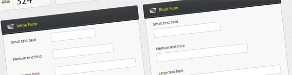
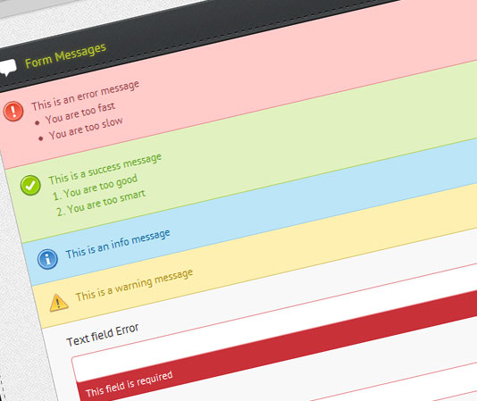

Hi there, thank you for purchasing this theme. If you have any questions that are beyond the scope of this documentation, please feel free to contact me via the comment section or email me at maimairel@yahoo.com Thanks.
This template has three sections, the header, the sidebar, and the main container.
The header structure is as follows:
<div id="mws-header" class="clearfix"> <!-- Logo Container --> <div id="mws-logo-container"> <!-- Logo Wrapper, images put within this wrapper will always be vertically centered --> <div id="mws-logo-wrap"> <img src="images/mws-logo.png" alt="mws admin" /> </div> </div> <!-- User Tools (notifications, logout, profile, change password) --> <div id="mws-user-tools" class="clearfix"> <!-- Notifications --> <div id="mws-user-notif" class="mws-dropdown-menu"> <a href="#" data-toggle="dropdown" class="mws-dropdown-trigger"><i class="icon-exclamation-sign"></i></a> <!-- Unread notification count --> <span class="mws-dropdown-notif">35</span> <!-- Notifications dropdown --> <div class="mws-dropdown-box"> <div class="mws-dropdown-content"> <ul class="mws-notifications"> <!-- Here goes all the messages --> </ul> <div class="mws-dropdown-viewall"> <a href="#">View All Notifications</a> </div> </div> </div> </div> <!-- Messages --> <div id="mws-user-message" class="mws-dropdown-menu"> <a href="#" data-toggle="dropdown" class="mws-dropdown-trigger"><i class="icon-envelope"></i></a> <!-- Unred messages count --> <span class="mws-dropdown-notif">35</span> <!-- Messages dropdown --> <div class="mws-dropdown-box"> <div class="mws-dropdown-content"> <ul class="mws-messages"> <!-- Here goes all the messages --> </ul> <div class="mws-dropdown-viewall"> <a href="#">View All Messages</a> </div> </div> </div> </div> <!-- User Information and functions section --> <div id="mws-user-info" class="mws-inset"> <!-- User Photo --> <div id="mws-user-photo"> <img src="example/profile.jpg" alt="User Photo" /> </div> <!-- Username and Functions --> <div id="mws-user-functions"> <div id="mws-username">Hello, John Doe</div> <ul> <li><a href="#">Profile</a></li> <li><a href="#">Change Password</a></li> <li><a href="index.html">Logout</a></li> </ul> </div> </div> </div> </div>
The main structrure is as follows:
<!-- Start Main Wrapper --> <div id="mws-wrapper"> <!-- Necessary markup, do not remove --> <div id="mws-sidebar-stitch"></div> <!-- Sidebar Wrapper --> <div id="mws-sidebar"> <!-- Hidden Nav Collapse Button --> <div id="mws-nav-collapse"> <span></span> <span></span> <span></span> </div> <!-- Searchbox --> <div id="mws-searchbox" class="mws-inset"> <form action="typography.html"> <input type="text" class="mws-search-input" placeholder="Search..." /> <button type="submit" class="mws-search-submit"><i class="icon-search"></i></button> </form> </div> <!-- Main Navigation --> <div id="mws-navigation"> <ul> <!-- Here goes the navigation --> </ul> </div> </div> <!-- Main Container Start --> <div id="mws-container" class="clearfix"> <!-- Inner Container Start --> <div class="container"> </div> <!-- Inner Container End --> <!-- Footer --> <div id="mws-footer"> Copyright Your Website 2012. All Rights Reserved. </div> </div> <!-- Main Container End --> </div>
This template consists of Bootstrap stylesheet, base stylesheet, main stylesheet, font stylesheet, icon stylesheet, jquery-ui stylesheet and plugin stylesheet.
Bootstrap stylesheet is the foundation stylesheet which is utilized to reset the browser inconsistencies as well as styling the bootstrap components. This stylesheet is required to be included in your page.
The main stylesheet is separated into several files, which do the styling for the main layout and every other custom components of this template.
This is a list of the main stylesheets which are located in css/core
It's recommended to include them all in all your pages, or just merge them into one file. Separation is meant to ease understanding and use of each file.
To ease inclusion of these files, just include css/mws.style.css, which already import all these css files
@import url("shared.css");
@import url("core.css");
@import url("panels.css");
@import url("table.css");
@import url("gallery.css");
@import url("button.css");
@import url("statistic.css");
@import url("form.css");
@import url("error.css");
@import url("tweaks.css");
@import url("plugins.css");
@import url("responsive.css");
This template includes PTSans, a font from Font Squirrel which is used in the whole template.
This template includes three icon sets, web font and sprite icons
Each icon has its own class defined in each stylesheet in css/icons
jQuery-UI stylesheets are located in jui/css
Just include jui/css/jquery.ui.all.css to use the jquery-ui styles.
Plugin stylesheets are located in each plugin folder in plugins/, more detailed explanation can be found in the plugins section.
This template has four build in javascript files:
This template's content area is divided into panels.
A panel can be collapsible and is used to display widgets, tables, forms, text, charts etc.
A panel is divided into grids using the fluid grid system (an extension of 960gs).
Here is the general panel structure:
<!-- Panel Wrapper -->
<div class="mws-panel grid_4">
<!-- Panel Header -->
<div class="mws-panel-header">
<!-- Panel Title -->
<span>Panel Header</span>
</div>
<!-- Panel Body -->
<div class="mws-panel-body">
</div>
</div>
Panel Wrapper
Panel wrapper has a class attribute 'mws-panel grid_4'
'grid_4' means that this panel is panel which fill 4 grids of the 8 available, so it's 50% of the container's width.
Panel Header
Panel header has a class attribute 'mws-panel-header', and a panel header will contain the panel title
Panel Title
Panel title is the title of the panel. A panel title can have an icon, which can be customized by the class attribute.
From the code above, the panel title has the class attribute 'mws-i-24 i-text-styling'. This class attribute is explained at the icons section.
Panel Body
Panel body contains everything. From widgets, tables, toolbars, charts, forms etc.
To make a panel collapsible, add the css class 'mws-collapsible' to the panel wrapper, eg:
<div class="mws-panel grid_4 mws-collapsible"></div>
Forms, can be styled in three ways:

Form HTML Structure:
<form class="mws-form">
<div class="mws-form-block">
<div class="mws-form-row">
<label></label>
<div class="mws-form-item">
<textarea></textarea>
</div>
</div>
</div>
<div class="mws-button-row">
</div>
</form>
The markup above, will result in a block form layout. To get inline form layout, change
<div class="mws-form-block"></div>
to
<div class="mws-form-inline"></div>
By not wrapping the form rows with either 'mws-form-block' or 'mws-form-inline', the form will be a block form, which is the default layout.
Columned form divides the area in eight columns, so you can have columns in an eight columns base (col-1-8, col-2-8, col-3-8, col-4-8, col-5-8, col-6-8, col-7-8, col-8-8).
To use the columned layout, you have to replace each form row with a column, wrap it in a div with the class 'mws-form-cols', so the code would look like this:
<div class="mws-form-cols clearfix">
<div class="mws-form-col-1-8">
<label>Column 1/8</label>
<div class="mws-form-item large">
<input type="text" class="mws-textinput" />
</div>
</div>
<div class="mws-form-col-1-8">
<label>Column 1/8</label>
<div class="mws-form-item large">
<input type="text" class="mws-textinput" />
</div>
</div>
<div class="mws-form-col-1-8">
<label>Column 1/8</label>
<div class="mws-form-item large">
<input type="text" class="mws-textinput" />
</div>
</div>
<div class="mws-form-col-1-8">
<label>Column 1/8</label>
<div class="mws-form-item large">
<input type="text" class="mws-textinput" />
</div>
</div>
<div class="mws-form-col-1-8">
<label>Column 1/8</label>
<div class="mws-form-item large">
<input type="text" class="mws-textinput" />
</div>
</div>
<div class="mws-form-col-1-8">
<label>Column 1/8</label>
<div class="mws-form-item large">
<input type="text" class="mws-textinput" />
</div>
</div>
<div class="mws-form-col-1-8">
<label>Column 1/8</label>
<div class="mws-form-item large">
<input type="text" class="mws-textinput" />
</div>
</div>
<div class="mws-form-col-1-8">
<label>Column 1/8</label>
<div class="mws-form-item large">
<input type="text" class="mws-textinput" />
</div>
</div>
</div>
You can also wrap the form in a 'fieldset' in place of a 'div':
<form class="mws-form">
<fieldset class="mws-form-block">
<legend>Form Legend</legend>
<div class="mws-form-row">
<label></label>
<div class="mws-form-item">
<textarea></textarea>
</div>
</div>
</fieldset>
<div class="mws-button-row">
</div>
</form>
You can have a form with mixed layouts by just giving a form row the class 'mws-form-block' or 'mws-form-inline'.
<form class="mws-form">
<div class="mws-form-row mws-form-block"></div>
<div class="mws-form-row mws-form-inline"></div>
</form>
Form inputs can have three sizes, small, medium and large. Large is the default size for form inputs.
You can control the input size by giving the class attribute 'small', 'medium', or 'large' to the form item wrapper.
<div class="mws-form-item large">
<input type="text" />
</div>
You can create a vertical list of form elements like radio buttons, checkboxes and event text fields using unordered list with the class attribute 'mws-form-list'
<form class="mws-form">
<div class="mws-form-block">
<div class="mws-form-row">
<label></label>
<div class="mws-form-item">
<ul class="mws-form-list">
<li><input type="radio" name="gender" /> <label>Male</label></li>
<li><input type="radio" name="gender" /> <label>Female</label></li>
</ul>
</div>
</div>
</div>
<div class="mws-button-row">
</div>
</form>
An inline, horizontal list can also be created by giving an additional class name, 'inline' to the unordered list.
<ul class="mws-form-list inline"></ul>
For textarea, select, radio and checkbox fields, you don't have to add any class attribute.
For text fields, you'll have to add the css class 'mws-textinput' to get them styled.
Form messages can be an info message, an error message, a warning message and a success message.

The base css class for all messages is 'mws-form-message', just add 'error', 'success', 'info', or 'warning' to get different error messages.
HTML structure:
<div class="mws-form-message error"></div> <div class="mws-form-message success"></div>
The stylesheet of the form and its messages can be found in css/core/form.css
Pick list is a plugin for converting usual select inputs to those inputs where you can move items from the left to right column. This plugin was originally a modified version of jquery-ui-picklist which was included in my previous Admin Template. This plugin now comes with lots of enhancements, filtering functionality and responsive layout.
To use the plugin, just include the necessary JavaScript and CSS files, and create your select field. After that initialize the plugin in the document ready event, and you're done.
<link rel="stylesheet" href="custom-plugins/picklist/picklist.css" media="screen">
<script src="js/libs/jquery-1.8.2.min.js"></script>
<script src="custom-plugins/picklist/picklist.min.js"></script>
<script>
$(document).ready(function() {
$('#pickList').pickList();
});
</script>
<select id="pickList" name="picklist[]">
<option>Apple</option>
<option selected="selected">Banana</option>
<option selected="selected">Kiwi</option>
<option>Orange</option>
<option>Pear</option>
<option>Grape</option>
<option>Mango</option>
<option>Peach</option>
<option>Dragon Fruit</option>
<option>Durian</option>
<option>Avocado</option>
<option>Cherry</option>
</select>
This plugin has too many options to be displayed here, but they are mainly just class names that are used for styling the plugin. It's not recommended to change them unless you know what you do. The options listed below are the ones that you can use to tweak the plugin functionality.
| Option Name | Default | Description |
|---|---|---|
| enableCounters | true | Whether to show the numbers of visible/invisible options above each filter column. |
| enableFilters | true | Whether to show and bind the filtering events. If set to false, the filter inputs above each column will be hidden. |
| sortList | true | Whether to sort the list each time it's refreshed. If not sorted, the options will be ordered in the way you move and create the items before initialization. |
This plugin converts a set of form fields into a navigable wizard form with responsive layout. It can work together with jquery validation and form plugin seamlessly. The examples in this template show how this plugin can be implemented to work with those plugins. AJAX submission through this plugin is done via configuring the form plugin with its options which can be found in jQuery Form plugin's official website and documentation here.
To use the plugin, just include the necessary JavaScript and CSS file, create and divide your forms into any elements with the specified wizard element class name that you can specify in this plugin options. After that initialize the plugin in the document ready event, and you're done.
Note: At the end of the form below, you'll see a div with the class .form-actions .wizard-actions. This div is actually a wrapper for the wizard buttons. It is not required to create this element unless you want to place the button container in another place as the plugin will check whether this element exists, and create one if it doesn't. It is there just for showing an example.
<link rel="stylesheet" href="custom-plugins/wizard/wizard.css">
<script src="js/libs/jquery-1.8.2.min.js"></script>
<script src="custom-plugins/wizard/jquery.form.min.js"></script>
<script>
$(document).ready(function() {
$('#wizard-form').wizard();
});
</script>
<form id="wizard-form" class="form-horizontal" data-forward-only="false">
<fieldset class="wizard-step">
<legend class="wizard-label"><i class="icon-book"></i> Account</legend>
<div class="control-group">
<label class="control-label">Username <span class="required">*</span></label>
<div class="controls">
<input type="text" name="wizard[username]" class="span12">
</div>
</div>
</fieldset>
...
<fieldset class="wizard-step">
<legend class="wizard-label"><i class="icon-ok"></i> Confirmation</legend>
<div class="control-group">
<label class="control-label">Payment Method <span class="required">*</span></label>
<div class="controls">
<select name="wizard[payment]">
<option>PayPal</option>
<option>Visa</option>
<option>Mastercard</option>
<option>Wire Transfer</option>
</select>
</div>
</div>
</fieldset>
<div class="form-actions wizard-actions">
</div>
</form>
| Option Name | Default | Description |
|---|---|---|
| element | '.wizard-step' | The selector used to find elements inside the form |
| navLabelElement | '.wizard-label' | The selector used to find elements whose text is used as the navigation label |
| buttonContainer | '.wizard-actions' | The selector to find the button container. If this selector returns no elements, then a button container will be generated dynamically |
| navContainerClass | 'wizard-nav' | Additional class name to be given to the navigation |
| buttonContainerClass | 'form-actions btn-toolbar' | Additional class name to be given to the button container |
| transition | null | Transition callback, which will allow you to define a custom transition effect for the wizard steps. Usage of this callback requires you to have an average knowledge of jQuery. |
| onStepLeave | null | Function to be called before leaving a step, return false to cancel the event. (used to perform form validation in the demo) |
| onStepShown | null | Function to be called after a new step is shown |
| onBeforeSubmit | null | Function to be called before submitting the form, return false to cancel form submission |
| forwardOnly | false | Whether to allow users to navigate back to a previous wizard step |
| orientation (horizontal | vertical) | 'horizontal' | This option will determine the wizard layout |
| ajaxSubmit | true | This option determines whether the form is going to be submitted via AJAX or a normal HTTP request |
| ajaxOptions | {} | The options to pass to the jQuery Form plugin when submitting the form via AJAX |
| defaultButtonClass | 'btn' | The default button class name for the wizard buttons |
| responsiveNextButtonClass | 'responsive-next-btn' | The responsive next button class name |
| responsivePrevButtonClass | 'responsive-prev-btn' | The responsive prev button class name |
| submitButtonClass | 'btn-primary pull-right' | The submit button class name |
| responsiveNextButtonLabel | '<i class="icon-caret-right"></i>' | The text to show inside the responsive next button/td> |
| responsivePrevButtonLabel | '<i class="icon-caret-left"></i>' | The text to show inside the responsive prev button |
| nextButtonLabel | 'Next' | The text to show inside the next button |
| prevButtonLabel | 'Prev' | The text to show inside the prev button |
| submitButtonLabel | 'Submit' | The text to show inside the submit button |
Lastly, this is a simple plugin to style file inputs with Bootstrap's uneditable-input and input-append. This plugin is very simple and can be used by just specifying data-provide="fileinput" on a file input field.
To use the plugin, just include the JavaScript file, create your file input field and initialize it.
<script src="js/libs/jquery-1.8.2.min.js"></script>
<script src="custom-plugins/fileinput.min.js"></script>
<input type="file">
$(document).ready(function() {
if( $.fn.fileInput ) {
$('input[type="file"]').fileInput();
}
});
This plugin has too many options to be displayed here, but they are mainly just class names that are used for styling the plugin. It's not recommended to change them unless you know what you do. The options listed below are the ones that you can use to tweak the plugin functionality.
| Option Name | Default | Description |
|---|---|---|
| placeholder | 'No file selected...' | The text to show in the undeditable-input field to give users feedback before selecting a file |
| buttontext | 'Browse...' | The text to show in the browse button |
There are 15 plugins included in this template:
All plugins are styled to work together with this template, so using the provided css files is recommended.
Colorpicker is jQuery plugin by eyecon, it's a simple component to select color in the same way you select color in Adobe Photoshop.
To use colorpicker, you have to attach the necessary javascript and css files
<script type="text/javascript" src="js/libs/jquery-1.8.2.min.js"></script> <script type="text/javascript" src="plugins/colorpicker/colorpicker.js"></script> <link rel="stylesheet" type="text/css" href="plugins/colorpicker/colorpicker.css" />
There's already a css class for text input build in this template, you can use it to get a text field with a colorpicker icon on the right side. The css class is 'mws-colorpicker'.
<input type="text" class="mws-colorpicker" />
For more info about this plugin, please visit http://www.eyecon.ro/colorpicker/
elFinder is an open-source file manager for web, written in JavaScript using jQuery UI. As you can see its creation is inspired by simplicity and convenience of Finder program used in Mac OS X operating system.
To use elFinder, you'll have to attach jQuery-UI, the necessary javascript and css files, and configure it to your liking.
<script type="text/javascript" src="js/libs/jquery-1.8.2.min.js"></script>
<script type="text/javascript" src="jui/js/jquery-ui-1.9.0.min.js"></script>
<script type="text/javascript" src="plugins/elfinder/js/elfinder.min.js"></script>
<link rel="stylesheet" type="text/css" href="css/jui/jquery.ui.css" media="screen" />
<link rel="stylesheet" type="text/css" href="plugins/elfinder/css/elfinder.css" />
<script type="text/javascript">
$(document).ready(function() {
$("#elfinder").elfinder({
url : 'plugins/elfinder/connectors/php/connector.php',
lang : 'en',
docked : true,
height: 300
});
});
</script>
<div id="elfinder"></div>
elFinder also requires a connector to communicate with the server. There are two connectors included in elFinder, one for PHP and one for python. This connector is configured via the "url" option of the plugin (see above).
For more info about this plugin, please visit http://elrte.org/elfinder
CLEditor is a very simple, lightweight WYSIWYG editor that compared to other big, complex editors, is very easy to implement and use. This was the reason I choose this plugin as the WYSIWYG editor instead of other editors.
On the home page of CLEditor, it is stated that CLEditor is an open source jQuery plugin which provides a lightweight, full featured, cross browser, extensible, WYSIWYG HTML editor that can be easily added into any web site.
<link rel="stylesheet" href="plugins/cleditor/jquery.cleditor.css" media="screen">
<script src="js/libs/jquery-1.8.2.min.js"></script>
<script src="plugins/cleditor/jquery.cleditor.min.js"></script>
<script>
$(document).ready(function() {
if( $.fn.cleditor ) {
$('#cleditor').cleditor({
// CLEditor options
});
}
});
</script>
<textarea id="cleditor"></textarea>
Home Page: http://premiumsoftware.net/cleditor/
Documentation: http://premiumsoftware.net/cleditor/docs/GettingStarted.html
Flot is a pure JavaScript plotting library for jQuery, with a focus on simple usage, attractive looks and interactive features.
Flot works with Internet Explorer 6+, Chrome, Firefox 2+, Safari 3+ and Opera 9.5+
Below is just a very simple example, you can actually create almost everything you need by using the provided plugins, or you can even create your own.
Generally, all browsers that support the HTML5 canvas tag are supported. For support for Internet Explorer < 9, you can use Excanvas, a canvas emulator. This canvas emulator is included on your page between IE conditional comments like on the example below.
<script src="js/libs/jquery-1.8.2.min.js"></script>
<!--[if lt IE 9]>
<script src="js/libs/excanvas.min.js"></script>
<![endif]-->
<script src="plugins/flot/jquery.flot.js"></script>
<script>
$(document).ready(function() {
var options = {
series: {
lines: { show: true },
points: { show: true }
}
};
// Generate your data here
$.plot($( '#placeholder' ), data, options);
});
</script>
<div id="placeholder" style="height: 300px;"></div>
Home Page: http://flotcharts.org/
Documentation: https://github.com/flot/flot/blob/master/API.md
FullCalendar is a jQuery plugin that provides a full-sized, drag & drop calendar like the one below. It uses AJAX to fetch events on-the-fly for each month and is easily configured to use your own feed format. It is visually customizable and exposes hooks for user-triggered events.
FullCalendar is great for displaying events, but it isn't a complete solution for event content-management. Beyond dragging an event to a different time/day, you cannot change an event's name or other associated data. It is up to you to add this functionality through FullCalendar's event hooks.
This plugin has its own container when put in a widget in this template; just put the calendar inside a div with the class .calendar as a widget content.
<link rel="stylesheet" href="plugins/fullcalendar/fullcalendar.css" media="screen">
<link rel="stylesheet" href="plugins/fullcalendar/fullcalendar.print.css" media="print">
<script src="jui/js/jquery-ui-1.9.0.min.js"></script>
<script src="plugins/fullcalendar/fullcalendar.min.js"></script>
<script>
$(document).ready(function() {
if( $.fn.fullCalendar ) {
var date = new Date();
var d = date.getDate();
var m = date.getMonth();
var y = date.getFullYear();
$( '#fullcalendar' ).fullCalendar({
header: {
left: 'prev next today',
center: 'title',
right: 'month agendaWeek agendaDay'
},
editable: true,
events: [
{
title: 'All Day Event',
start: new Date(Date.UTC(y, m, 1))
},
...
{
title: 'Click for Google',
start: new Date(Date.UTC(y, m, 28)),
end: new Date(Date.UTC(y, m, 29)),
url: 'http://google.com/'
}
],
buttonText: {
prev: '<i class="icon-caret-left"></i>',
next: '<i class="icon-caret-right"></i>',
prevYear: '<i class="icon-caret-left"></i><i class="icon-caret-left"></i>',
nextYear: '<i class="icon-caret-right"></i><i class="icon-caret-right"></i>'
}
});
}
});
</script>
<div id="fullcalendar"></div>
Home Page: http://arshaw.com/fullcalendar/
Documentation: http://arshaw.com/fullcalendar/docs/
jGrowl is an unobtrusive notification system for web applications, similar to Growl for Mac OS X. The idea is simple, deliver notifications to the end user in a noticeable way that doesn't obstruct the work flow and yet keeps the user informed.
To use jGrowl, you need to attach the necessary javascript and css files:
<script type="text/javascript" src="js/libs/jquery-1.8.2.min.js"></script>
<script type="text/javascript" src="plugins/jgrowl/jquery.jgrowl.js"></script>
<link rel="stylesheet" type="text/css" href="plugins/jgrowl/jquery.jgrowl.css" media="screen" />
<script type="text/javascript">
$.jGrowl("Hello World!", {position: "bottom-right"});
</script>
For more info about this plugin, please visit https://bitbucket.org/stanlemon/jgrowl
imgAreaSelect is a jQuery plugin for selecting a rectangular area of an image. It allows web developers to easily implement image cropping functionality, as well as other user interface features, such as photo notes (like those on Flickr).
To use imgAreaSelect, you need to attach the necessary javascript and css files:
<script type="text/javascript" src="js/libs/jquery-1.8.2.min.js"></script>
<script type="text/javascript" src="plugins/imgareaselect/jquery.imgareaselect.min.js"></script>
<link rel="stylesheet" type="text/css" href="plugins/imgareaselect/css/imgareaselect-default.css" media="screen" />
<script type="text/javascript">
$(document).ready(function () {
$('img#photo').imgAreaSelect({
handles: true,
onSelectEnd: someFunction
});
});
</script>
For more info about this plugin, please visit http://odyniec.net/projects/imgareaselect/
There's also a tutorial for submitting the image coordinates to the server, you can find it here:
http://odyniec.net/projects/imgareaselect/examples-callback.html#submitting-selection-coordinates
The developers of TinyMCE brings you Plupload, a highly usable upload handler for your Content Management Systems or similar. Plupload is currently separated into a Core API and a jQuery upload queue widget this enables you to either use it out of the box or write your own custom implementation.
To use plupload, you need to attach the necessary javascript and css files, configure your backend and initialize the plugin.
<script type="text/javascript" src="js/libs/jquery-1.8.2.min.js"></script>
<script type="text/javascript" src="plugins/plupload/plupload.js"></script>
<script type="text/javascript" src="plugins/plupload/plupload.flash.js"></script>
<script type="text/javascript" src="plugins/plupload/plupload.html4.js"></script>
<script type="text/javascript" src="plugins/plupload/plupload.html5.js"></script>
<script type="text/javascript" src="plugins/plupload/jquery.plupload.queue/jquery.plupload.queue.js"></script>
<link rel="stylesheet" href="plugins/plupload/jquery.plupload.queue.css" />
<script type="text/javascript">
$(document).ready(function() {
$("#uploader").pluploadQueue({
// General settings
runtimes : 'html4, html5',
url : '../upload.php',
max_file_size : '1000mb',
max_file_count: 20, // user can add no more then 20 files at a time
chunk_size : '1mb',
unique_names : true,
multiple_queues : true,
// Resize images on clientside if we can
resize : {width : 320, height : 240, quality : 90},
// Rename files by clicking on their titles
rename: true,
// Sort files
sortable: true,
// Specify what files to browse for
filters : [
{title : "Image files", extensions : "jpg,gif,png"},
{title : "Zip files", extensions : "zip,avi"}
]
});
});
</script>
<div id="uploader">
<p>You browser doesn't have Flash, Silverlight, Gears, BrowserPlus or HTML5 support.</p>
</div>
For more info about this plugin, please visit http://www.plupload.com/
DataTables is a plug-in for the jQuery Javascript library. It is a highly flexible tool, based upon the foundations of progressive enhancement, which will add advanced interaction controls to any HTML table.
To use datatables, you need to attach the necessary javascript file:
<script type="text/javascript" src="js/libs/jquery-1.8.2.min.js"></script> <script type="text/javascript" src="plugins/datatables/jquery.dataTables.js"></script>
because data table styles is integrated with the core styles, you don't need to add any additional stylesheets.
For more info about data table, please visit http://datatables.net/
Form validation on this template is based on the jquery validate plugin, one of the most popular jquery validation plugin available.
<script type="text/javascript" src="js/libs/jquery-1.8.2.min.js"></script> <script type="text/javascript" src="plugins/validate/jquery.validate.js"></script>
To use the validation plugin, just add the javascript file, and define the correct class names to your form elements.
For more info about this plugin, please visit http://bassistance.de/jquery-plugins/jquery-plugin-validation/
Select2 is a jQuery based replacement for select boxes. It supports searching, remote data sets, and infinite scrolling of results. Look and feel of Select2 is based on the excellent Chosen library.
<link rel="stylesheet" href="plugins/select2/select2.css" media="screen">
<script src="js/libs/jquery-1.8.2.min.js"></script>
<script src="plugins/select2/select2.min.js"></script>
<script>
$(document).ready(function() {
if( $.fn.select2 ) {
$('#e1').select2();
}
});
</script>
<select id="e1">
<option value="AL">Alabama</option>
...
<option value="WY">Wyoming</option>
</select>
Home Page: http://ivaynberg.github.com/select2/
Documentation: http://ivaynberg.github.com/select2/
prettyPhoto is a jQuery lightbox clone. Not only does it support images, it also support for videos, flash, YouTube, iframes and ajax. It’s a full blown media lightbox. It is very easy to setup, yet very flexible if you want to customize it a bit. Plus the script is compatible in every major browser, even IE6.
To use this plugin you need to add the necessary javascript and css files:
<script type="text/javascript" src="js/libs/jquery-1.8.2.min.js"></script>
<script type="text/javascript" src="plugins/prettyphoto/js/jquery.prettyPhoto-min.js"></script>
<link rel="stylesheet" type="text/css" href="plugins/prettyphoto/css/prettyPhoto.css" />
$(document).ready(function(){
$("a[rel^='prettyPhoto']").prettyPhoto();
});
<a href="sample.jpg" rel="prettyPhoto"><img src="sample.jpg alt="Sample" /></a>
For more info about this plugin, please visit http://www.no-margin-for-errors.com/projects/prettyphoto-jquery-lightbox-clone/
The iButton jQuery plug-in emulates the checkbox functionality found on the iPhone. This plug-in was inspired by several other plugins such as Thomas Reynolds' iPhone style checkboxes. However, this plugin attempt to combine the best features of all of the various iPhone checkbox style plugins and then add the functionality that we felt was still missing.
Note: The plugin shipped within this template is a modified version of the original plugin, so it may work without any images, and is styled using pure CSS3. Additionally this plugin now supports HTML5 data-attributes, so you can create an iButton by just specifying data-provide="ibutton". This also provides you the ability to use those data-attributes to set the plugin options. The example code below only includes the required scripts and HTML markup and shows how those data-attributes functionality can help you create iButtons without writing any JavaScript code.
<link rel="stylesheet" href="plugins/ibutton/jquery.ibutton.css" media="screen">
<script src="js/libs/jquery-1.8.2.min.js"></script>
<script src="plugins/ibutton/jquery.ibutton.min.js"></script>
<input type="checkbox" class="ibutton">
<script>
$(document).ready(function() {
if( $.fn.iButton ) {
$('.ibutton').iButton();
}
});
</script>
Home Page: http://www.givainc.com/labs/ibutton_jquery_plugin.htm
Documentation: http://www.givainc.com/labs/ibutton_jquery_plugin.htm
Envato's Asset Library - http://themeforest.net/page/asset_library